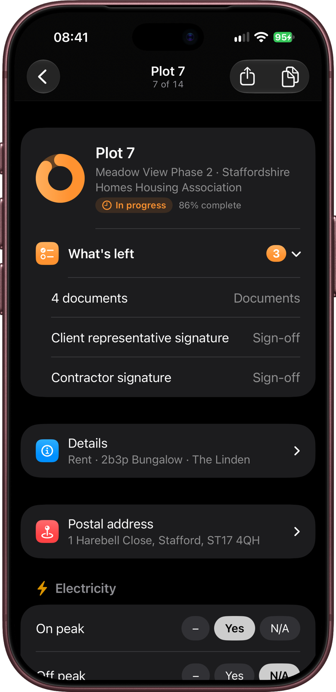
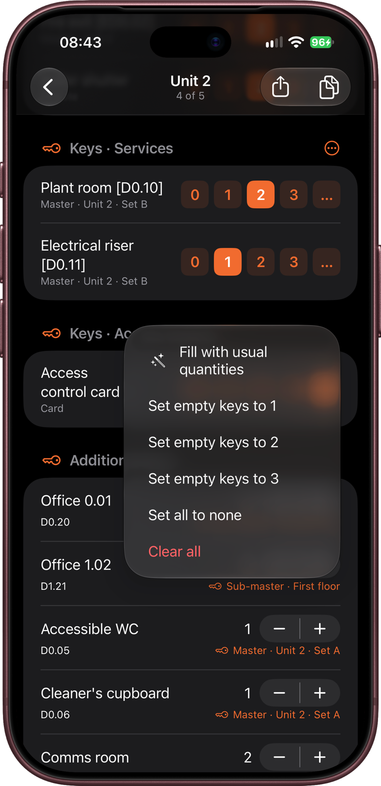
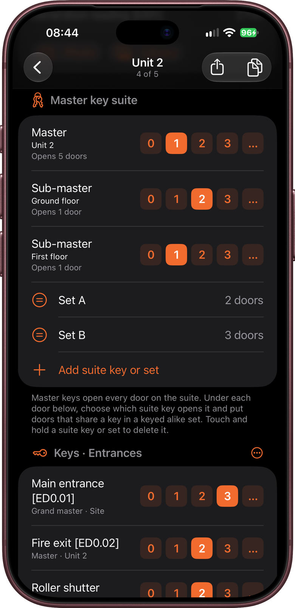
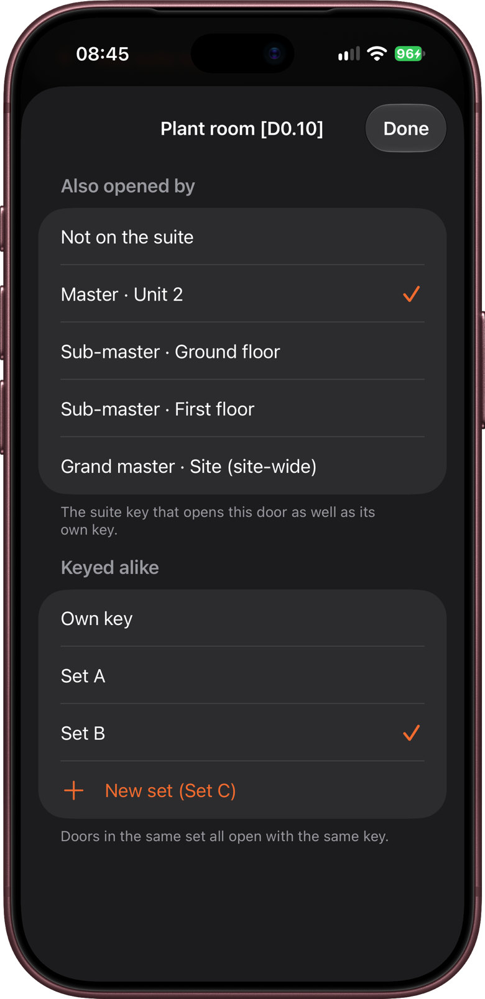
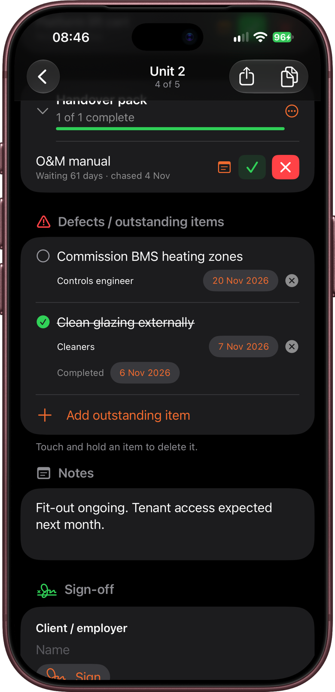
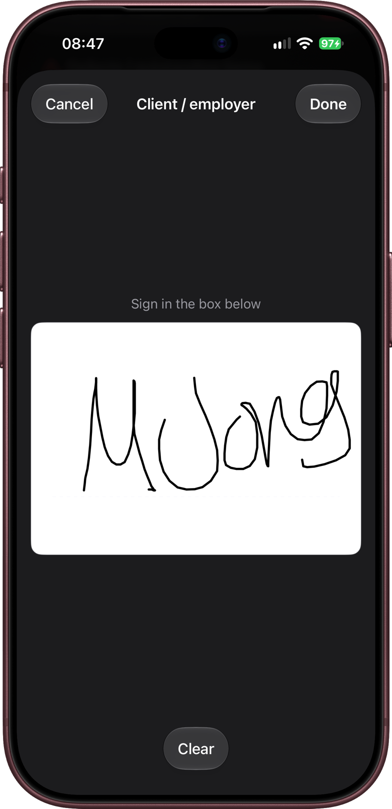
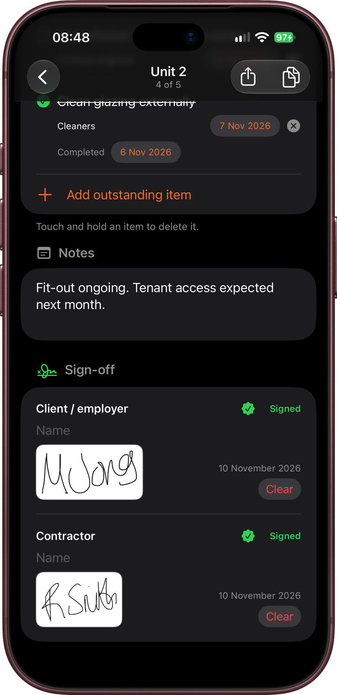
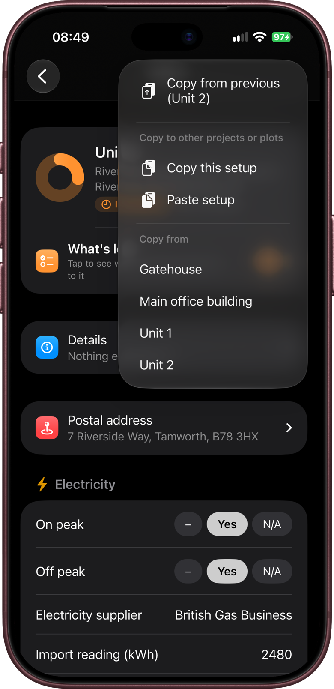
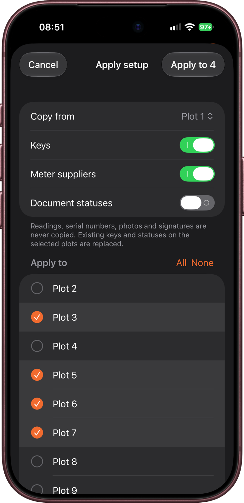

Go through a plot's handover form from top to bottom: details, keys, final snags, notes and signatures. The chapter ends with the shortcuts for plots that are set up the same way, which save most of the typing on a big site.
Meters and documents have chapters of their own (chapters 5 and 6), so they're only covered briefly here.
KeyCheck saves as you go. There's no Save button on a plot, and you can leave a form half-filled and come back to it.
Opening a plot
Open a project and tap a plot in the list. The handover form opens.
To move to the next or previous plot without going back to the list, swipe sideways. Or tap the plot's name at the top of the screen and choose Next or Previous. Under the name, KeyCheck shows where you are in the list, for example "7 of 40".
The top of the form
The ring at the top fills up as the form is completed. Beside it are the plot's status and how complete it is, for example "In progress · 64% complete".
| Status | What it means |
|---|---|
| Not started | Nothing recorded yet. |
| In progress | Some of the form is filled in. |
| Awaiting sign-off | Everything is recorded except the signatures. |
| Handed over | Everyone in Sign-off has signed. |
The same statuses appear in the plot list, so you can see at a glance where each plot stands. On the project screen, the tiles above the list show how many plots have each status. Tap a tile to show only those plots, and tap it again to show them all.
What's left
Underneath is What's left, with a count of what still needs doing. Tap it to see the list, for example "Gas", "3 keys" or "Contractor signature". Tap an item to jump straight to it.
The ring counts meters, keys, documents and signatures. Final snags and notes don't count towards it, because a plot can be handed over with snags still open.

The sections of the form
| Section | What you record |
|---|---|
| Details | Plot number, tenure, property details and handover date. |
| Postal address | House number, street, town and postcode. |
| Meters | Readings, serial numbers, suppliers and photos (chapter 5). |
| Keys | How many of each key, fob or card are handed over. |
| Instructions & certificates | The documents for the plot (chapter 6). |
| Defects / outstanding items | Final snags still open at handover. |
| Notes | Anything else. |
| Sign-off | Names and signatures. |
Sections you've switched off in Form items (chapter 3) don't appear.
Details and postal address
Details and Postal address fold up to a one-line summary once they're filled in, for example "Rent · 3b4p House · Type F1". Tap the summary to open them again.
In Details:
- Plot no.: the plot number.
- Tenure: Rent, Shared Ownership, Market Rent, or Other to type your own. Tenure decides which documents the plot needs if the project has tenure exceptions (chapter 3).
- Property type, House type, Bedrooms and People (for example 3 bedrooms, 4 people), and Block and Floor for flats.
- Handover date: tap Set handover date to set it to today, then tap the date to change it. You don't have to set it yourself: the first signature sets it to today if it's empty.
Most of these can be filled in for lots of plots at once when adding plots, or by importing a spreadsheet (chapter 3).
Keys
Each key has a row of buttons: 0, 1, 2 and 3. Tap the number handed over. For more than 3, tap … and choose a number, or tap Enter number… to type one. To empty a key again, tap … and then Clear.
Tap 0 when none of that key is handed over, rather than leaving it blank. A blank key still shows in What's left. A 0 counts as done.
Filling in several keys at once
Each key group has a Set all button (⋯) beside its heading:
- Fill with usual quantities: puts in the usual quantity for each key, as set in Form items (chapter 3). This only appears if your keys have usual quantities.
- Set empty keys to 1, 2 or 3.
- Set all to none: sets every key in the group to 0.
- Clear all: empties every key in the group.
Fill with usual quantities and Set empty keys to… only fill keys that are empty, so they never change a number you've already entered.

Keys that aren't on the list
Tap Add another key (or Add key, on a form with no key list, such as a commercial building) to add a key just for this plot. Type its name, for example "Garage", and use + and − to set how many.
To delete one of these keys, touch and hold it and tap Delete. (Swiping sideways moves between plots, so deleting uses touch and hold instead.)
Key suites
Skip this section unless the building's doors are on a master key suite. Most houses don't need it. It's mainly for commercial buildings and blocks of flats.
What a key suite is
- Normally each door has its own key, which opens only that door.
- A master key opens lots of doors, for example every door in one building. It saves the building manager carrying a big bunch of keys.
- A sub-master opens a smaller group of doors, such as one floor.
- A grand master opens everything, often across the whole site.
- Keyed alike means a few doors share the same key. For example, all the cleaner's cupboards might open with one key.
So a door can have its own key and also be opened by a master. That's normal.
At handover, the building manager needs to know two things: how many of each key they're getting, and which key opens which door. KeyCheck records both. If the lock supplier gave you a keying schedule (a chart of which key opens which door), work from that.
An example
In the Riverside Business Park sample project, Unit 2 has:
- a Master for the whole unit
- a Sub-master for the ground floor, and another for the first floor
- Set A: the accessible WC and the cleaner's cupboard, which share a key
- Set B: the plant room, the electrical riser and the comms room, which share another key
The master opens the plant room and the riser, but not the comms room. So the comms room opens only with the Set B key. Open Unit 2 to see how it looks.

Step 1: Switch it on
Key suites need Door refs & key suites switched on in Project setup → Form items (chapter 3). It's already on for commercial buildings.
With it on, each key can have a door ref: the door's reference from the drawings or door schedule, for example D0.10.
Step 2: Add the suite keys
- Under the keys, tap Add master key suite. A Master key suite section appears with one master key in it.
- To add a sub-master or grand master, tap Add suite key or set and choose it.
- Tap a suite key to say what area it covers, for example "First floor".
- Tap the number buttons beside each suite key to record how many are handed over, the same as other keys.
Step 3: Say which key opens each door
Do this for each door on the suite:
- Tap the door's name. (For a key you added on this plot, tap the orange Details line under it instead.)
- Under Also opened by, tap the suite key that also opens this door, for example Master. Choose Not on the suite if no suite key opens it.
- Under Keyed alike, leave it on Own key, unless this door shares its key with other doors. If it does, tap the set they share, or tap New set to start one. Sets are named Set A, Set B and so on.
- Tap Done.

Step 4: Check it
- A line under each door shows how it's keyed, for example "Master · Unit 2 · Set B".
- Each suite key shows how many doors it opens, for example "Opens 5 doors", and each set shows how many doors are in it. If a number looks wrong, a door has been missed or put in the wrong place.
To rename a set, tap it. To delete a suite key or set, touch and hold it.
Grand masters for the whole site
A grand master that opens doors in more than one building is recorded once, with the project's Communal keys (chapter 7), rather than on each building. It then appears under Also opened by on every building, marked "(site-wide)".
Meters and documents
These have their own chapters, but in short:
- Meters: type the reading and serial number, or tap Photo and let KeyCheck read them from the picture (chapter 5).
- Documents: tap ✓ when you have a document and ✗ when you've asked for it and are still waiting. If a document doesn't apply to this plot, touch and hold it and choose Not applicable. Each group has a Set all button (⋯) to mark the whole group at once, and the button beside All documents marks every document on the plot. A banner offers Undo straight afterwards (chapter 6).
Final snags
Defects / outstanding items is for final snags that are still open at handover, so the handover form shows what's left to fix and who's fixing it.
- Tap Add outstanding item and describe the snag.
- Optionally, type Who is fixing it, and tap Due date to add a date it should be done by. Tap the date to change it.
- When it's fixed, tap the circle beside it. KeyCheck records today as the Completed date. Tap the date to correct it, for example if the snag was fixed a few days before you ticked it. A completed date can't be in the future.
To reopen a snag, tap its circle again. This clears the completed date. To delete a snag, touch and hold it and tap Delete.
Completed snags appear on the handover form and under Actions completed in the progress report (chapter 11).

KeyCheck isn't a full snagging app. If you need to manage snagging across a whole site, with photos, drawings and trades, try Snaglite.
Notes
Notes is for anything else worth recording on this plot, such as "Resident collecting spare fob on Friday". Notes appear on the handover form, and can be included in the progress report.
Signatures
Sign-off lists the people who sign the handover, for example Client representative and Contractor. The roles are set in Form items (chapter 3).
- Type the person's Name.
- Tap Sign and hand them the phone.
- They sign in the box. Tap Clear to start again if they need to.
- Tap Done.

The signature appears with the date it was signed, and Signed shows beside the role. If the plot doesn't have a handover date yet, the first signature sets it to today.
To redo a signature, tap Clear beside it and sign again.
When everyone in Sign-off has signed, the plot's status changes to Handed over.

Saving time on similar plots
Plots on the same street or in the same block are often set up the same way: the same keys, the same meter suppliers and often the same documents. KeyCheck has three ways to copy them, so you only type them once.
Whichever you use, readings, serial numbers, photos and signatures are never copied. These are different on every plot.
Copy from another plot
- Open the plot you want to fill in.
- Tap Copy from (the two-pages button, top right).
- Choose Copy from previous, or one of the plots near this one. To copy from a plot further away, tap Other plots… and search for it.
- Choose what to copy:
- Keys and suppliers: key quantities, and meter details marked Same on every plot in Form items, such as the supplier.
- Keys, suppliers and documents: the same, plus each document's status and notes.
The copy also fills in the plot's tenure and property details if they're empty. It doesn't change any that are already filled in.
Quicker still: in the plot list, swipe right on a plot and tap Copy from to copy keys and suppliers from the plot above it, without opening it.

Copy and paste a setup
To copy a setup to a plot in a different project:
- Open the plot to copy from, tap Copy from, then Copy this setup.
- Open the plot to copy to, in any project, tap Copy from, then Paste setup.
This copies keys, suppliers and document statuses.
Apply setup to several plots
To copy one plot's setup to lots of plots in one go:
- Open the project and tap Project setup → Apply setup to several…. (Or touch and hold a plot in the list and choose Apply setup to several….)
- Under Copy from, choose the plot to copy.
- Choose what to copy: Keys, Meter suppliers and Document statuses. Document statuses are off to start with, because each plot's documents usually need checking one by one.
- Under Apply to, tick the plots to copy it to. All and None tick or untick every plot.
- Tap Apply to (the button shows how many plots you've ticked).
This replaces the keys and document statuses already on the ticked plots, so check you've ticked the right ones.

Copied document dates
KeyCheck dates each document when its status changes (chapter 6). Copied document statuses are dated with the day you copied them, not the dates on the plot you copied from, because this plot's documents won't necessarily have arrived on the same days.
Exporting the handover form
When the form is done, tap Export this handover (the share button, top right) to make a PDF of it, ready to email, print or save. Chapter 10 explains what's on it.
If you can't change anything
If a View only notice appears at the top of the form, you can read and export the plot but not change it. This happens when:
- you don't have KeyCheck Pro (chapter 2), or
- someone has shared the project with you as view only (chapter 12).
Employer's agents and contract administrators can use What's left and the plot statuses to see where each plot stands before a progress meeting, without going to site. Tap the Awaiting sign-off tile on the project screen to see which plots are ready to hand over. If the site team are recording keys and suppliers, setting up one plot and using Apply setup to several before the first handover saves them doing it plot by plot.